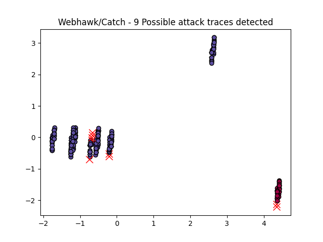

Webhawk Catch ReportUnsupervised learning Web logs/OS processes attack detection. Date: 15/06/25 at 18:41:28 GMTLog file: LOG_GENERATOR/apache_log_formatted.txt Log type: apache logs Findings: 44 |
 |
| Severity | Related CVE(s) | Line# | LLM Insights | Log line |
| High | No CVE found | 9 | N/A | 192.168.1.101 - - [07/Jun/2025:10:52:22 -0700] "POST /search?q= HTTP/1.1" 301 5776 "-" "Mozilla/5.0 (Unknown# Linux x86_64) AppleWebKit/534.34 (KHTML# like Gecko) PhantomJS/1.9.8 Safari/534.34" |
| High | CVE-2012-5913 CVE-2012-2759 CVE-2010-4402 CVE-2009-2762 CVE-2007-1599 CVE-2007-0109 CVE-2005-2109 CVE-2004-1584 CVE-2004-1559 |
32 | N/A | 203.0.113.5 - - [07/Jun/2025:22:16:06 -0700] "POST /wp-login.php HTTP/1.1" 200 8695 "-" "Mozilla/5.0 (Unknown# Linux x86_64) AppleWebKit/534.34 (KHTML# like Gecko) PhantomJS/1.9.8 Safari/534.34" |
| High | CVE-2005-0543 CVE-2004-1148 CVE-2004-1147 CVE-2004-2632 CVE-2004-2631 CVE-2004-2630 CVE-2004-0129 CVE-2001-1060 CVE-2001-0478 |
49 | N/A | 185.220.101.45 - - [07/Jun/2025:13:20:40 -0700] "GET /phpmyadmin HTTP/1.1" 404 8263 "-" "sqlmap/1.4.9#stable" |
| High | CVE-2012-5913 CVE-2012-2759 CVE-2010-4402 CVE-2009-2762 CVE-2007-1599 CVE-2007-0109 CVE-2005-2109 CVE-2004-1584 CVE-2004-1559 |
57 | N/A | 203.0.113.5 - - [07/Jun/2025:17:27:56 -0700] "POST /wp-login.php HTTP/1.1" 301 7921 "-" "Mozilla/5.0 (Unknown# Linux x86_64) AppleWebKit/534.34 (KHTML# like Gecko) PhantomJS/1.9.8 Safari/534.34" |
| High | CVE-2005-0543 CVE-2004-1148 CVE-2004-1147 CVE-2004-2632 CVE-2004-2631 CVE-2004-2630 CVE-2004-0129 CVE-2001-1060 CVE-2001-0478 |
67 | N/A | 203.0.113.5 - - [08/Jun/2025:02:05:39 -0700] "GET /phpmyadmin HTTP/1.1" 301 14651 "-" "sqlmap/1.4.9#stable" |
| High | 126 | N/A | 89.248.165.66 - - [08/Jun/2025:00:44:01 -0700] "POST /search?q= HTTP/1.1" 200 15181 "-" "Mozilla/5.0 (Unknown# Linux x86_64) AppleWebKit/534.34 (KHTML# like Gecko) PhantomJS/1.9.8 Safari/534.34" | |
| High | CVE-2005-0543 CVE-2004-1148 CVE-2004-1147 CVE-2004-2632 CVE-2004-2631 CVE-2004-2630 CVE-2004-0129 CVE-2001-1060 CVE-2001-0478 |
225 | N/A | 198.51.100.23 - - [07/Jun/2025:15:54:18 -0700] "GET /phpmyadmin HTTP/1.1" 404 2877 "-" "Mozilla/5.0 (Windows NT 10.0# Win64# x64) AppleWebKit/537.36 (KHTML# like Gecko) Chrome/91.0.4472.124 Safari/537.36" |
| High | CVE-2005-0543 CVE-2004-1148 CVE-2004-1147 CVE-2004-2632 CVE-2004-2631 CVE-2004-2630 CVE-2004-0129 CVE-2001-1060 CVE-2001-0478 |
252 | N/A | 89.248.165.66 - - [08/Jun/2025:08:34:08 -0700] "POST /phpmyadmin HTTP/1.1" 200 4620 "-" "Mozilla/5.0 (Unknown# Linux x86_64) AppleWebKit/534.34 (KHTML# like Gecko) PhantomJS/1.9.8 Safari/534.34" |
| High | CVE-2005-0543 CVE-2004-1148 CVE-2004-1147 CVE-2004-2632 CVE-2004-2631 CVE-2004-2630 CVE-2004-0129 CVE-2001-1060 CVE-2001-0478 |
273 | N/A | 89.248.165.66 - - [08/Jun/2025:06:05:07 -0700] "GET /phpmyadmin HTTP/1.1" 200 18787 "-" "sqlmap/1.4.9#stable" |
| Medium | No CVE found | 93 | N/A | 203.0.113.5 - - [08/Jun/2025:00:28:49 -0700] "POST / HTTP/1.1" 404 18796 "-" "Mozilla/5.0 (Unknown# Linux x86_64) AppleWebKit/534.34 (KHTML# like Gecko) PhantomJS/1.9.8 Safari/534.34" |
| Medium | No CVE found | 110 | N/A | 54.175.105.120 - - [07/Jun/2025:14:50:35 -0700] "POST / HTTP/1.1" 403 13079 "-" "Mozilla/5.0 (Unknown# Linux x86_64) AppleWebKit/534.34 (KHTML# like Gecko) PhantomJS/1.9.8 Safari/534.34" |
| Medium | No CVE found | 130 | N/A | 192.168.1.101 - - [07/Jun/2025:21:17:18 -0700] "POST / HTTP/1.1" 200 6363 "-" "Mozilla/5.0 (Windows NT 10.0# Win64# x64) AppleWebKit/537.36 (KHTML# like Gecko) Chrome/91.0.4472.124 Safari/537.36" |
| Medium | No CVE found | 174 | N/A | 54.175.105.120 - - [07/Jun/2025:12:47:44 -0700] "POST / HTTP/1.1" 200 12363 "-" "Mozilla/5.0 (Windows NT 10.0# Win64# x64) AppleWebKit/537.36 (KHTML# like Gecko) Chrome/91.0.4472.124 Safari/537.36" |
| Medium | No CVE found | 263 | N/A | 10.0.0.23 - - [07/Jun/2025:18:38:09 -0700] "POST / HTTP/1.1" 200 11961 "-" "Mozilla/5.0 (Windows NT 10.0# Win64# x64) AppleWebKit/537.36 (KHTML# like Gecko) Chrome/91.0.4472.124 Safari/537.36" |
| Medium | No CVE found | 274 | N/A | 192.168.1.101 - - [07/Jun/2025:12:20:59 -0700] "POST / HTTP/1.1" 403 17139 "-" "Mozilla/5.0 (Unknown# Linux x86_64) AppleWebKit/534.34 (KHTML# like Gecko) PhantomJS/1.9.8 Safari/534.34" |
| Medium | No CVE found | 98 | N/A | 89.248.165.66 - - [08/Jun/2025:01:26:16 -0700] "POST /index.php?id=1' OR '1'='1 HTTP/1.1" 200 9953 "-" "Nmap Scripting Engine" |
| Medium | No CVE found | 103 | N/A | 89.248.165.66 - - [08/Jun/2025:08:30:43 -0700] "POST /index.php?id=1' OR '1'='1 HTTP/1.1" 404 8922 "-" "Mozilla/5.0 (Unknown# Linux x86_64) AppleWebKit/534.34 (KHTML# like Gecko) PhantomJS/1.9.8 Safari/534.34" |
| Medium | No CVE found | 121 | N/A | 10.0.0.23 - - [07/Jun/2025:17:29:44 -0700] "POST /index.php?id=1' OR '1'='1 HTTP/1.1" 301 14373 "-" "Mozilla/5.0 (Windows NT 10.0# Win64# x64) AppleWebKit/537.36 (KHTML# like Gecko) Chrome/91.0.4472.124 Safari/537.36" |
| Medium | No CVE found | 139 | N/A | 192.168.1.101 - - [07/Jun/2025:10:25:08 -0700] "POST /index.php?id=1' OR '1'='1 HTTP/1.1" 200 2599 "-" "Nmap Scripting Engine" |
| Medium | No CVE found | 208 | N/A | 192.168.1.101 - - [08/Jun/2025:03:38:00 -0700] "POST /index.php?id=1' OR '1'='1 HTTP/1.1" 301 15143 "-" "Mozilla/5.0 (Windows NT 10.0# Win64# x64) AppleWebKit/537.36 (KHTML# like Gecko) Chrome/91.0.4472.124 Safari/537.36" |
| Medium | No CVE found | 231 | N/A | 89.248.165.66 - - [07/Jun/2025:14:32:19 -0700] "POST /index.php?id=1' OR '1'='1 HTTP/1.1" 403 11082 "-" "Mozilla/5.0 (Windows NT 10.0# Win64# x64) AppleWebKit/537.36 (KHTML# like Gecko) Chrome/91.0.4472.124 Safari/537.36" |
| Medium | No CVE found | 265 | N/A | 89.248.165.66 - - [07/Jun/2025:22:00:20 -0700] "POST /index.php?id=1' OR '1'='1 HTTP/1.1" 404 4962 "-" "Mozilla/5.0 (Unknown# Linux x86_64) AppleWebKit/534.34 (KHTML# like Gecko) PhantomJS/1.9.8 Safari/534.34" |
| Medium | No CVE found | 269 | N/A | 198.51.100.23 - - [08/Jun/2025:05:35:20 -0700] "POST /index.php?id=1' OR '1'='1 HTTP/1.1" 200 13824 "-" "Mozilla/5.0 (Windows NT 10.0# Win64# x64) AppleWebKit/537.36 (KHTML# like Gecko) Chrome/91.0.4472.124 Safari/537.36" |
| Medium | No CVE found | 3 | N/A | 185.220.101.45 - - [07/Jun/2025:11:06:32 -0700] "POST /phpmyadmin HTTP/1.1" 404 3648 "-" "Mozilla/5.0 (Unknown# Linux x86_64) AppleWebKit/534.34 (KHTML# like Gecko) PhantomJS/1.9.8 Safari/534.34" |
| Medium | No CVE found | 69 | N/A | 198.51.100.23 - - [07/Jun/2025:12:58:15 -0700] "POST /phpmyadmin HTTP/1.1" 301 16948 "-" "Mozilla/5.0 (Unknown# Linux x86_64) AppleWebKit/534.34 (KHTML# like Gecko) PhantomJS/1.9.8 Safari/534.34" |
| Medium | No CVE found | 74 | N/A | 203.0.113.5 - - [08/Jun/2025:01:40:42 -0700] "POST /phpmyadmin HTTP/1.1" 200 18458 "-" "curl/7.68.0" |
| Medium | No CVE found | 75 | N/A | 185.220.101.45 - - [08/Jun/2025:05:05:19 -0700] "POST /phpmyadmin HTTP/1.1" 500 12471 "-" "Mozilla/5.0 (Unknown# Linux x86_64) AppleWebKit/534.34 (KHTML# like Gecko) PhantomJS/1.9.8 Safari/534.34" |
| Medium | No CVE found | 132 | N/A | 89.248.165.66 - - [08/Jun/2025:01:43:59 -0700] "POST /phpmyadmin HTTP/1.1" 500 706 "-" "Mozilla/5.0 (Unknown# Linux x86_64) AppleWebKit/534.34 (KHTML# like Gecko) PhantomJS/1.9.8 Safari/534.34" |
| Medium | No CVE found | 191 | N/A | 103.21.244.0 - - [07/Jun/2025:14:41:01 -0700] "POST /phpmyadmin HTTP/1.1" 404 12732 "-" "Mozilla/5.0 (Unknown# Linux x86_64) AppleWebKit/534.34 (KHTML# like Gecko) PhantomJS/1.9.8 Safari/534.34" |
| Medium | No CVE found | 201 | N/A | 10.0.0.23 - - [07/Jun/2025:22:36:57 -0700] "POST /phpmyadmin HTTP/1.1" 403 7457 "-" "Mozilla/5.0 (Windows NT 10.0# Win64# x64) AppleWebKit/537.36 (KHTML# like Gecko) Chrome/91.0.4472.124 Safari/537.36" |
| Medium | No CVE found | 233 | N/A | 89.248.165.66 - - [08/Jun/2025:02:29:15 -0700] "POST /phpmyadmin HTTP/1.1" 500 7128 "-" "Mozilla/5.0 (Unknown# Linux x86_64) AppleWebKit/534.34 (KHTML# like Gecko) PhantomJS/1.9.8 Safari/534.34" |
| Medium | No CVE found | 277 | N/A | 198.51.100.23 - - [07/Jun/2025:22:35:26 -0700] "POST /phpmyadmin HTTP/1.1" 200 6388 "-" "curl/7.68.0" |
| Medium | No CVE found | 287 | N/A | 103.21.244.0 - - [07/Jun/2025:22:03:29 -0700] "POST /phpmyadmin HTTP/1.1" 500 5408 "-" "Mozilla/5.0 (Unknown# Linux x86_64) AppleWebKit/534.34 (KHTML# like Gecko) PhantomJS/1.9.8 Safari/534.34" |
| Medium | No CVE found | 6 | N/A | 89.248.165.66 - - [07/Jun/2025:11:55:43 -0700] "POST /phpmyadmin HTTP/1.1" 404 1908 "-" "Nmap Scripting Engine" |
| Medium | No CVE found | 62 | N/A | 185.220.101.45 - - [07/Jun/2025:14:30:27 -0700] "POST /phpmyadmin HTTP/1.1" 500 4296 "-" "sqlmap/1.4.9#stable" |
| Medium | No CVE found | 95 | N/A | 103.21.244.0 - - [08/Jun/2025:06:03:02 -0700] "POST /phpmyadmin HTTP/1.1" 404 9895 "-" "Nmap Scripting Engine" |
| Medium | No CVE found | 105 | N/A | 198.51.100.23 - - [07/Jun/2025:16:07:20 -0700] "POST /phpmyadmin HTTP/1.1" 301 19157 "-" "sqlmap/1.4.9#stable" |
| Medium | No CVE found | 113 | N/A | 185.220.101.45 - - [08/Jun/2025:04:43:36 -0700] "POST /phpmyadmin HTTP/1.1" 301 6113 "-" "sqlmap/1.4.9#stable" |
| Medium | No CVE found | 167 | N/A | 198.51.100.23 - - [07/Jun/2025:20:01:39 -0700] "GET /phpmyadmin HTTP/1.1" 404 11048 "-" "Mozilla/5.0 (Unknown# Linux x86_64) AppleWebKit/534.34 (KHTML# like Gecko) PhantomJS/1.9.8 Safari/534.34" |
| Medium | No CVE found | 170 | N/A | 203.0.113.5 - - [07/Jun/2025:19:27:53 -0700] "GET /phpmyadmin HTTP/1.1" 301 11020 "-" "Mozilla/5.0 (Windows NT 10.0# Win64# x64) AppleWebKit/537.36 (KHTML# like Gecko) Chrome/91.0.4472.124 Safari/537.36" |
| Medium | No CVE found | 177 | N/A | 192.168.1.101 - - [08/Jun/2025:03:12:18 -0700] "POST /phpmyadmin HTTP/1.1" 404 4562 "-" "Nmap Scripting Engine" |
| Medium | No CVE found | 213 | N/A | 89.248.165.66 - - [07/Jun/2025:22:55:10 -0700] "POST /phpmyadmin HTTP/1.1" 403 9926 "-" "sqlmap/1.4.9#stable" |
| Medium | No CVE found | 286 | N/A | 198.51.100.23 - - [07/Jun/2025:11:44:04 -0700] "POST /phpmyadmin HTTP/1.1" 403 16747 "-" "sqlmap/1.4.9#stable" |
| Medium | No CVE found | 289 | N/A | 89.248.165.66 - - [07/Jun/2025:11:45:49 -0700] "POST /phpmyadmin HTTP/1.1" 500 11472 "-" "curl/7.68.0" |